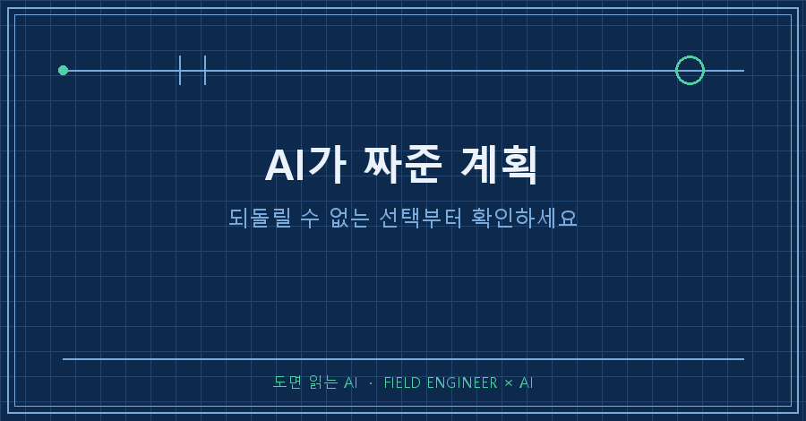
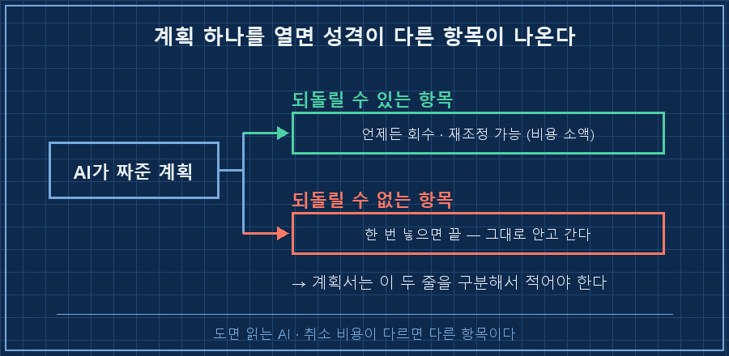
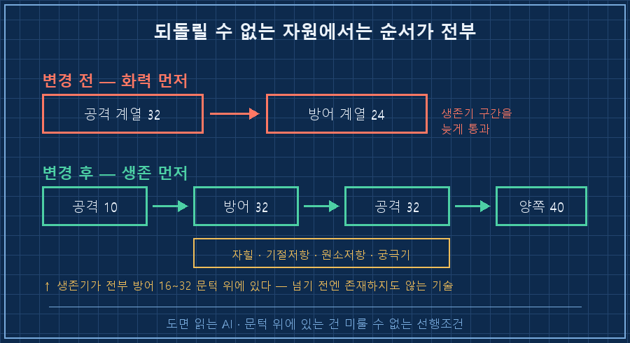
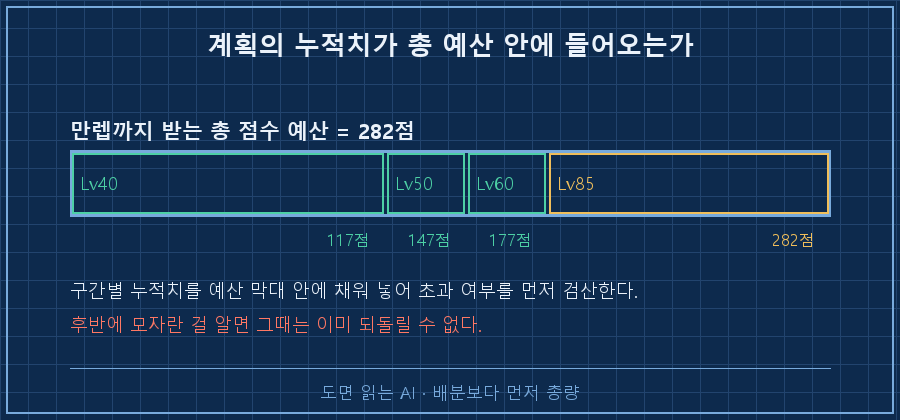

시킨 대로 여덟 번째 레벨까지 찍었습니다.
그리고 같은 AI한테 계획을 다시 짜게 했더니, 순서를 통째로 뒤집어놨어요.
결론부터 적을게요.
AI가 짜준 계획을 받으면 제일 먼저 물어야 할 건 "이 중에 되돌릴 수 없는 게 뭐냐"입니다. 되돌릴 수 있는 항목은 나중에 고치면 그만인데, 되돌릴 수 없는 항목은 순서를 한 번 잘못 잡으면 그걸로 끝이거든요. 첫 계획이 뒤집힌 이유가 정확히 그거였습니다.
2026년 8월이고, 취미로 하는 액션 RPG의 캐릭터 성장 계획에서 벌어진 일이에요. 소재는 게임이지만 한정된 자원을 순서대로 나눠 넣는 계획이면 뭐든 똑같이 걸립니다. 예산이든 인력이든 학습 순서든요.
저는 뭔가를 만들고 고치는 쪽에서 십오 년째 일하고 있어요.
그 바닥에서 제일 서늘하게 들리는 말이 "이미 뚫었는데요"입니다. 설정값은 다시 넣으면 되고 조립은 다시 하면 되는데, 한번 뚫은 구멍은 안 되잖아요.
정작 제 개인 계획에는 그 구분이 없었더라고요..
1. "1포인트씩 점차"라고 적힌 계획은 쓸 수가 없었어요
원래 갖고 있던 공략 문서가 이런 식이었습니다.
"초반에 1 찍고 점차 올린다", "대부분 1포인트만".
읽을 땐 그럴듯한데 막상 화면 앞에 앉으면 손이 안 움직여요.
지금 이 레벨에서 세 점을 어디에 넣으라는 건지가 안 적혀 있으니까요.
그래서 다시 시켰습니다. 레벨마다 몇 점을 어디에, 순서대로 전부 확정해달라고요.
AI가 제일 먼저 한 일은 배분이 아니라 규칙 확인이었어요.
웹을 열두 번 뒤져서 이 게임의 성장 규칙 여섯 가지를 교차검증했습니다. 레벨당 몇 점이 나오는지, 어느 문턱에서 뭐가 열리는지 같은 것들이요.
그 표에 이 두 줄이 나란히 있었습니다.
스킬 점수 : 회수 가능 — 전문 NPC에게, 소액부터 시작해 점점 비싸짐
계열 숙련도 : 회수 불가
능력치 점수 : 회수 불가 → 이미 넣었으면 그대로 안고 간다이 두 줄을 보고 계획 전체가 갈렸어요.
2. 한 바구니에 성격이 다른 자원이 섞여 있었습니다
AI가 짜준 계획에서 제가 "포인트 배분"이라고 뭉뚱그려 읽은 칸 안에는, 사실 성격이 완전히 다른 세 가지가 들어 있었어요.
하나는 언제든 물릴 수 있는 자원입니다. 실제로 저는 여덟 번째 레벨에서 스킬 점수를 전부 회수해서 다시 찍었어요. 몇천 원어치 게임 화폐로 끝났습니다.
나머지 둘은 한 번 넣으면 영영 못 뺍니다. 제 공략 문서에도 그대로 적혀 있어요. "이미 넣었으면 그대로 안고 간다."

여기서 제가 뭘 놓쳤는지가 보이더라고요.
저는 AI한테 "최적 배분"을 물었지, "이 배분이 되돌릴 수 있는지"는 안 물었어요.
그런데 되돌릴 수 없는 자원에서는 최적해가 별로 안 중요합니다. 조금 덜 효율적이어도 살아남는 배치가, 이론상 최적인데 틀리면 캐릭터를 버려야 하는 배치보다 낫거든요.
3. 그래서 기준이 '최적'에서 '순서'로 바뀌었어요
새로 나온 계획은 순서가 이렇게 뒤집혔습니다.
변경 전 : 공격 계열 32 → 방어 계열 24
변경 후 : 공격 10 → 방어 32 → 공격 32 → 양쪽 40공격을 32까지 올리고 방어로 넘어가던 걸, 공격은 10에서 끊고 방어를 먼저 32까지 채우는 순서로 바꾼 거예요.
이유는 두 가지였습니다.
첫째, 최고 난이도에서 막히는 진짜 원인은 화력 부족이 아니라 생존 부족이라는 것. 그리고 살아남는 데 쓰는 기술들, 그러니까 자힐기·기절 저항·원소 저항·비상용 궁극기가 전부 방어 쪽 16에서 32 사이에 매달려 있었어요. 문턱을 넘기 전엔 존재하지도 않는 기술들입니다.
둘째, 화력은 41레벨 이후에 몰아서 올려도 늦지 않다는 것. 화력 쪽은 늦게 가도 회복이 되는데, 생존 쪽은 늦으면 그 구간에서 그냥 죽어요.
정리하면 이렇게 됩니다.
되돌릴 수 없는 자원에서는 순서가 전부입니다. 나중에 필요해질 게 특정 문턱 위에 있다면, 그 문턱까지 가는 투자는 미룰 수 있는 게 아니라 선행조건이에요.

4. 마지막은 총량 검산이었습니다
계획이 그럴듯해도 예산을 넘으면 그림의 떡이잖아요.
그래서 만렙까지 받게 될 점수 총량으로 검산을 시켰습니다.
Lv40 = 117점 (레벨당 3점 × 39레벨)
Lv50 = 147
Lv60 = 177
Lv85 = 252 + 퀘스트 보상 30 = 282 ✓계획에 적힌 누적치가 이 예산 안에 들어오는지 구간마다 맞춰본 거예요.
이게 없으면 40레벨쯤 가서 "점수가 모자라는데요" 하는 사태가 납니다. 그때는 이미 못 되돌리고요.
한 가지 더. AI가 끝까지 못 찾은 항목도 있었어요.
미검증(명시): 개별 스킬의 최대 레벨
- 원인: 위키 접근이 막혀 전수 확인 실패 (판본에 따라 6~16)
- 처리: 단정하지 않음. 게임 화면의 '현재/최대' 표기를 정본으로 사용모르는 걸 그럴듯하게 채워 넣는 대신, 모른다고 적고 확인 경로를 지정한 겁니다. 계획서에서 제일 믿음이 갔던 부분이 이 칸이었어요.

그리고 이틀 뒤, 아홉 번째 레벨에서 실제로 찍힌 값을 거꾸로 세어봤습니다. 계획표의 목표선과 맞아떨어졌어요! 다음 레벨에서 체력을 두 점 넣으라는 권고까지 받고 끝났습니다.
AI가 짜준 계획을 앞에 놓고 물어볼 세 가지
제가 이번 일로 만든 짧은 목록이에요.
| 물어볼 것 | 안 물으면 생기는 일 | 확인 방법 |
|---|---|---|
| 이 중 되돌릴 수 없는 항목은? | 되돌릴 수 있는 줄 알고 나중으로 미룸 | 항목별로 "취소 비용"을 적게 시킨다 |
| 병목은 무엇이고 언제 오나? | 초반에 편한 걸 먼저 하고 문턱에서 막힘 | "끝에서 막히는 이유"부터 답하게 한다 |
| 총량 예산 안에 들어오나? | 후반에 자원이 모자람 | 구간별 누적치를 숫자로 검산시킨다 |
세 줄이지만 순서가 있습니다. 첫 줄이 제일 위예요. 되돌릴 수 있는 계획이면 나머지 둘은 나중에 고쳐도 되거든요.
이런 게 궁금하실 것 같아서
Q. 그냥 나중에 고치면 안 되나요?
회수 가능한 항목은 그게 맞습니다. 저도 스킬 점수는 여덟 번째 레벨에서 전부 물려서 다시 찍었어요. 비용도 얼마 안 들었고요. 문제는 같은 계획서 안에 물릴 수 있는 것과 없는 것이 구분 없이 적혀 있을 때예요. 그러면 "나중에 고치지 뭐"라는 판단을 못 고치는 항목에까지 적용하게 됩니다.
Q. AI가 그런 건 알아서 알려주지 않나요?
물어본 만큼만 답하더라고요. 제 첫 요청은 "레벨마다 정확히 어디에 찍을지 정해줘"였어요. 그건 배분에 대한 질문이지 되돌림에 대한 질문이 아니잖아요. 규칙부터 교차검증하라고 시키니까 그제야 회수 불가라는 줄이 표에 올라왔습니다. 답이 안 나온 게 아니라 질문이 없었던 거죠..
여러분이 AI한테 받은 계획서에는, 취소할 수 있는 항목과 없는 항목이 구분돼 있나요?
이런 질문 목록은 makefield.ai에 하나씩 옮겨 적는 중입니다.
태그: #AI가짜준계획 #AI계획검증 #AI에게계획짜기 #되돌릴수없는결정 #AI의사결정 #AI실행계획 #AI계획수정 #자원배분계획 #AI결과물검수 #AI에게일시키기 #AI활용법 #AI에이전트 #개인AI에이전트 #현장엔지니어 #도면읽는AI